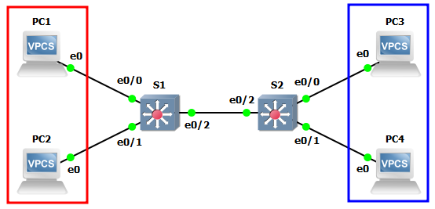
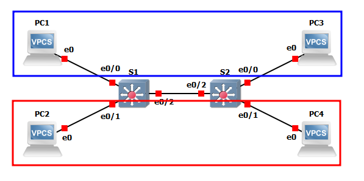
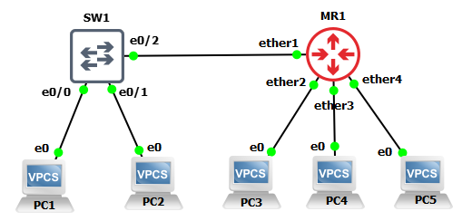

VLAN
Что такое VLAN
Virtual Local Area Network позволяет изолировать группу узлов с однаковыми требованиями в рамках одного широковещательного домена БЕЗ использования маршрутизаторов и изменения физической топологии.
Схема

Связь между устройствами без VLAN
Чтобы все устройства были доступны друг другу, необходимо задать им IP-адреса. Шлюз задавать не нужно, т.к. все устройства находятся в одной сети (широковещательном домене).
ip 10.0.0.1/24
save
ip 10.0.0.2/24
save
ip 10.0.0.3/24
save
ip 10.0.0.4/24
save
С помощью ping можно проверить доступность ПК между собой. Они должны "пинговаться".
Изоляция устройств
Допустим, есть две группы ПК, которые необходимо изолировать.
flowchart LR
subgraph group1
PC1
PC2
end
subgraph group2
PC3
PC4
endВариант изоляции с помощью маршрутизатора
Для этого можно воспользоваться маршрутизатором и построить такую схему
flowchart LR
subgraph group1
PC1 o--o S1
PC2 o--o S1
end
subgraph group2
S2 o--o PC3
S2 o--o PC4
end
R((Router))
S1 o--o R o--o S2Схема будет рабочей, но такой вариант требует внедрения в сеть маршрутизатора, выполнения дополнительных монтажных работ, что может быть затруднительным в рабочей сети. Поэтому, чтобы не перестраивать схему физически, можно воспользоваться технологией VLAN.
Вариант изоляции с помощью VLAN
В этом случае настройка обычно выполняется на коммутаторах. Для группы устройств, которую нужно изолировать, выделяют логическую группу - VLAN, которая идентифицируется с помощью номера от 1 до 4095. На коммутаторе "размечают" порты, к какому номеру VLAN они должны принадлежать. В итоге, передача данных возможна только между теми портами, которые имеют одинаковый номер VLAN.
В итоге схема окажется такой
flowchart TB
subgraph vlan 100
PC1
PC2
end
subgraph vlan 200
PC3
PC4
end
subgraph Switch
S.e0/0[e0/0]
S.e0/1[e0/1]
S.e0/2[e0/2]
S.e0/3[e0/3]
end
PC1 o--o S.e0/0
PC2 o--o S.e0/1
PC3 o--o S.e0/2
PC4 o--o S.e0/3Пусть устройства из группы 1 будут находиться во VLAN с номером 100, а устройства из группы 2 - во VLAN с номером 200.
Access и Trunk в Cisco
Access
Режим порта, который настраивается, чтобы изолировать подключенное устройство. Этому типу порта назначается номер VLAN.
По умолчанию обычно все устройства находятся во VLAN 1 - это VLAN по умолчанию, который существует сам по себе.
Далее приведена настройка VLAN так, что PC1 будет перемещен во VLAN 100.
configure terminal
interface e0/0
switchport mode access
switchport access vlan 100
end
show vlan - посмотреть, какие VLAN существуют и какие порты к какой VLAN принадлежат.
Если теперь на PC1 выполнить ping {адрес любого ПК}, то доступности не будет, т.к. PC1 теперь изолирован от остальных ПК.
Далее PC2 будет перенесен во VLAN 100.
configure terminal
interface e0/1
switchport mode access
switchport access vlan 100
end
Если теперь на PC1 выполнить ping {адрес PC2}, то PC2 будет доступен, а вот PC3 и PC4 доступны не будут. PC3 и PC4 по прежнему доступны друг другу. Можно оставить как есть, т.к. цель вроде бы достигнута, но если к любому коммутатору будет подключен еще один ПК, то он сможет взаимодействовать с PC3 и PC4, т.к. существует VLAN 1 (по умолчанию). Так быть не должно, поэтому лучше PC3 и PC4 тоже изолировать в отдельный VLAN.
conf t
int range e0/2 , e0/3
sw mode access
sw access vlan 200
end
Теперь внутри каждой группы устройства доступны друг другу, а новые подключенные ПК не будут иметь доступ к имеющимся группам.
Access не достаточно
Если рассмотреть такую схему

то просто "разметить" порты с помощью access не достаточно, т.к. даже в пределах одной группы устройства не смогут общаться.
conf t
int e0/0
sw mode access
sw access vlan 200
exit
int e0/1
sw mode access
sw access vlan 100
end
conf t
int e0/0
sw mode access
sw access vlan 200
exit
int e0/1
sw mode access
sw access vlan 100
end
Происходит так потому, что интерфейсы e0/2 на обоих коммутаторах по умолчанию в режиме access и во VLAN 1. Передавать данные между разными VLAN запрещено, поэтому между коммутаторами данные от ПК не передадутся.
А что, если ...
... перенести интерфейсы e0/2 на обоих коммутаторах во VLAN 100 и 200.
Так сделать на
accessинтерфейсе нельзя.
Если перенести этот интерфейс во VLAN 100, например, то доступ внутри VLAN 100 восстановится. Внутри VLAN 200 доступа по прежнему не будет. Но если он нужен, то нужен порт типа trunk.
Trunk порты
Описанную выше проблему помогут решить порты типа trunk. Такой тип портов позволяет передавать данные разных VLAN.
Если настроить на интерфейсах e0/2 на обоих коммутаторах режим trunk, то данные внутри ранее настроенных VLAN смогут быть доставлены между ПК.
conf t
int e0/2
sw trunk encapsulation dot1q
sw mode trunk
end
conf t
int e0/2
sw trunk encapsulation dot1q
sw mode trunk
end
Теперь доступность между PC1 и PC2 (как и между PC3 и PC4) должна быть.
Режим trunk настраивать нужно с двух сторон канала
Ограничения VLAN в Trunk
По умолчанию внутри trunk обычно разрешена передача данных любой VLAN. Чтобы разрешить передавать данные только определенных VLAN, нужно настроить это.
Например, если выполнить такую настройку, то между собой смогут общаться только устройства внутри VLAN 100.
conf t
int e0/2
sw trunk allowed vlan 100
end
conf t
int e0/2
sw trunk allowed vlan 100
end
Чтобы разрешить передавать данные еще и внутри VLAN 200, нужно выполнить такие настройки
conf t
int e0/2
sw trunk allowed vlan 100,200
end
conf t
int e0/2
sw trunk allowed vlan 100,200
end
Передача всех остальных VLAN будет запрещена.
Еще пример настройки VLAN на Cisco и MikroTik
Схема
Адрес сети - 10.0.0.0/24.
Для всех VLAN будут браться адреса из этой сети, хотя в действительности так не рекомендуется делать, но в примере так, чтобы увидеть разницу.

- SW1 - Cisco Switch
- MR1 - MikroTik CHR
- PC1, PC3 и PC5 будут находится в VLAN 135, а остальные - в VLAN 24.
Настройка VLAN (access) на Cisco
Создать VLAN 24 с названием VLAN24 на SW1. Название не обязательно. Присвоить access-портам VLAN.
conf t
vlan 10
name VLAN24
exit
int e0/1
switchport access vlan 24
end
wr mem
Создать VLAN 135 с названием VLAN135 на SW1. Название не обязательно. Присвоить access-портам VLAN.
conf t
vlan 135
name VLAN135
exit
int e0/0
switchport access vlan 135
end
wr mem
Теперь PC1 и PC2 не должны быть доступны друг другу, т.к. находятся в разных VLAN.
Настройка VLAN (access) на MikroTik
Т.к. образ MikroTik в GNS3 является маршрутизатором, т.е. порты должны находиться в разных сетях, необходимо объединить часть портов в коммутатор. Сделать это можно с помощью Bridge.
Создать интерфейс Bridge с именем vlans.
interface bridge add name=vlans vlan-filtering=yes
Перенести в Bridge необходимые порты, которые должны быть объединены как было бы на коммутаторе
interface bridge port add interface=ether2 bridge=vlans
interface bridge port add interface=ether3 bridge=vlans
interface bridge port add interface=ether4 bridge=vlans
Теперь PC3, PC4 и PC5 должны "видеть" друг друга, т.к. часть портов объединены, можно сказать, с помощью виртуального коммутатора внутри маршрутизатора. Если внести в Bridge порт ether1, и удалить VLAN на SW1, то друг друга видели бы все ПК.
Т.к. задачей является сегментировать сеть (т.е. излолировать устройства), то необходимо часть портов убрать в свой VLAN.
Вывести на экран текущие настройки Bridge
[admin@RouterOS] > interface bridge port print
Flags: X - disabled, I - inactive, D - dynamic, H - hw-offload
# INTERFACE BRIDGE HW PVID PRIORITY PATH-COST INTERNAL-PATH-COST HORIZON
0 ether3 vlans yes 1 0x80 10 10 none
1 ether2 vlans yes 1 0x80 10 10 none
2 ether4 vlans yes 1 0x80 10 10 none
Нужно указать каждому порту свой VLAN, используя параметр PVID.
numbers - номера строчек из вывода выше, для которых применяются изменения
[admin@RouterOS] > interface bridge port set numbers=0 pvid=24
[admin@RouterOS] > interface bridge port set numbers=1,2 pvid=135
[admin@RouterOS] > interface bridge port print
Flags: X - disabled, I - inactive, D - dynamic, H - hw-offload
# INTERFACE BRIDGE HW PVID PRIORITY PATH-COST INTERNAL-PATH-COST HORIZON
0 ether3 vlans yes 24 0x80 10 10 none
1 ether2 vlans yes 135 0x80 10 10 none
2 ether4 vlans yes 135 0x80 10 10 none
Теперь доступны между собой только те ПК, которые находятся в одной VLAN, т.е. PC3 видит PC5, а PC4 не видит.
Настройка trunk на Cisco и MikroTik
На данный момент ПК, подключенные к разным коммутаторм и находящиеся в одной VLAN, не доступны. Чтобы обеспечить доступность, необходимо настроить trunk.
На SW1 необходимо перевести порт коммутатора в режим trunk
conf t
int e0/2
switchport trunk encapsulation dot1q
switchport mode trunk
switchport trunk allowed vlan 24,135
end
wr mem
На MR1 необходимо добавить порт ether1 также в Bridge и настроить тегирование
interface bridge port add bridge=vlans interface=ether1
interface bridge vlan add bridge=vlans vlan-ids=135 tagged=ether1 untagged=ether2,ether4
interface bridge vlan add bridge=vlans vlan-ids=24 tagged=ether1 untagged=ether3
После этого PC1 сможет обмениваться пакетами с PC3 и PC5, а PC2 - с PC4, т.к. они находятся в одной VLAN. PC1 не сможет обмениваться пакетами с PC4, т.к. они находятся в разных VLAN.
Можно перевести порт на SW1, куда подключен PC2, в VLAN 135, тогда ему будут доступны PC1, PC3 и PC5, а PC4 не будет доступен.
conf t
int e0/1
switchport access vlan 135
end
wr mem
Native VLAN (Cisco)
flowchart LR
subgraph S1
S1.e0/0[e0/0]
S1.e0/1[e0/1]
end
S1.e0/1 o--o Hub
subgraph S2
S2.e0/0[e0/0]
S2.e0/1[e0/1]
end
subgraph S3
S3.e0/0[e0/0]
S3.e0/1[e0/1]
end
PC1 o--o S1.e0/0
S2.e0/0 o--o PC2
S3.e0/0 o--o PC3
Hub o--o S2.e0/1
Hub o--o S3.e0/1
PC4 o--o HubУсловия:
- PC1, PC2, PC3 - vlan 10,
- PC4 подключен к концентратору,
- Сеть -
10.0.0.0/24, - Все ПК должны "пинговаться".
conf t
int e0/0
switchport mode access
sw access vlan 10
exit
int e0/1
sw trunk enc dot1q
sw mode trunk
end
ip 10.0.0.1/24
ip 10.0.0.2/24
ip 10.0.0.3/24
ip 10.0.0.4/24
После этого все ПК должны быть доступны друг другу, кроме PC4.
PC4 недоступен остальным, т.к. принадлежит к VLAN 1, и native vlan на всех коммутаторах равен 1.
Чтобы PC4 был доступен другим ПК, необходимо изменить native vlan на всех коммутаторах на 10.
conf t
int e0/1
sh
sw tr native vlan 10
end
Теперь ВСЕ ПК доступны между собой.
Еще один "трюк" с native VLAN (Cisco)
С помощью native VLAN можно добиться того, чтобы устройства из разных VLAN были доступны друг другу без применения маршрутизации.
Для этого придется отключить протокол CDP и PVST, которые мешают это сделать. Это нормально, что они мешают это сделать, т.к. в реальности такого "трюка" не должно быть без намеренных действий.
conf t
no cdp run
no span vlan 20
end
Если поместить PC3 во VLAN 20, то он перестанет быть доступен другим ПК.
conf t
int e0/0
sw ac vlan 20
end
Чтобы вернуть доступность с помощью "трюка", необходимо поменять native VLAN на S3 на 20.
conf t
int e0/1
sw tr native vlan 20
end
Теперь PC3 доступен другим ПК.
Провести такой "трюк" с несколькими VLAN в одном trunk не получится.
В реальности такие "трюки" можно даже не встретить, т.к. существуют более адекватные решения.
VLAN в linux
см. документацию
🧠 Самостоятельная работа
flowchart TB
subgraph vlan 100
PC1
PC5
end
subgraph vlan 200
PC2
PC3
end
subgraph vlan 300
PC4
PC6
end
S1 o--o S2 o--o S3
S1 o--o PC1
S1 o--o PC2
S2 o--o PC3
S2 o--o PC4
S3 o--o PC5
S3 o--o PC6Условия
- S1 - Cisco Switch
- S2 - MikroTik CHR
- S3 - Linux
- Cеть для всех ПК -
192.168.0.0/24 - Ограничить передачу данных в trunk только тех VLAN, которые действительно должны там передаваться.
🤔 Контрольные вопросы
- Какие ПК "пингуются" между собой, если:
- делить их по VLAN?
- не делить их по VLAN?
- делить их по VLAN и задать разные сети для VLAN?
- не делить их по VLAN и задать разные сети для VLAN?
- На каких сегментах сети будет содержаться тег VLAN?
Используя данный сайт и его ресурсы, вы соглашаетесь с политикой и соглашениями сайта.
©️ Оформление, изложение, медиаматериалы. И. Попов, 2020-2025
Сделано с помощью Material for MkDocs.